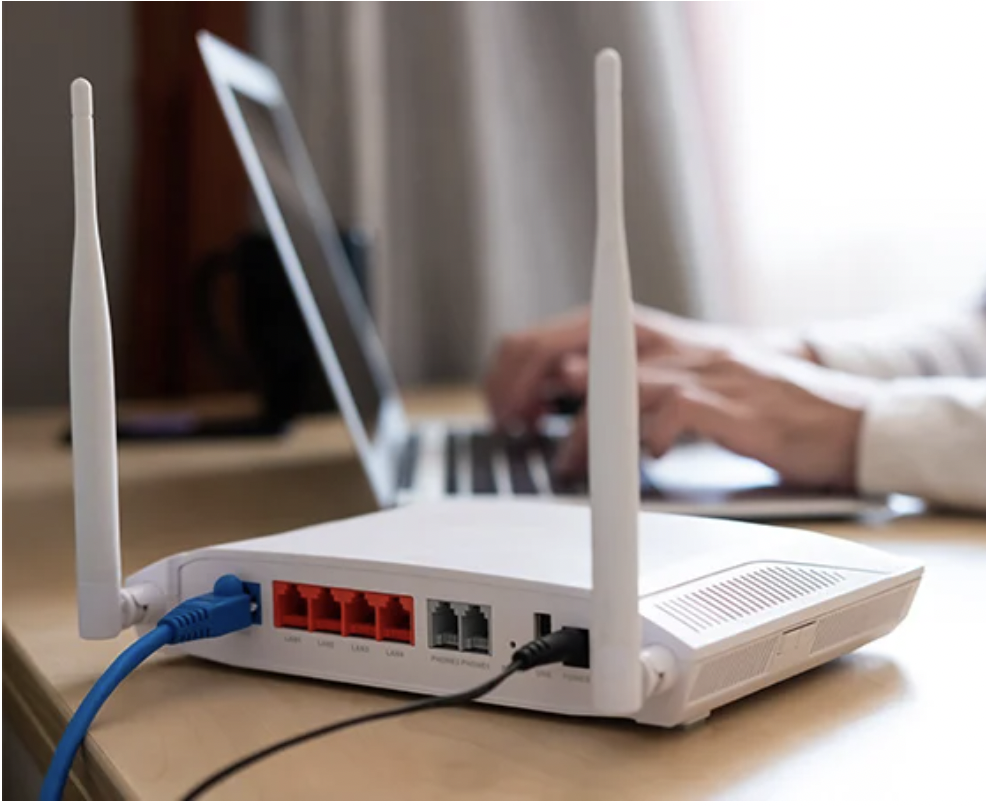

Basic Concepts
Before moving onto the core concepts of this lesson, let's first review some
more fundamental ideas in computer networking and security.
Networks
A network is a collection of computers that are able to communicate with
each other. There are a few different types of networks; some only communicate with
other computers on that network, and other networks can communicate with computers on
the Internet.
Routers
Routers are networking devices that direct traffic in a network. Most people
use routers to access the Internet. In a typical home network, the router acts as the
bridge between a user's home network and the Internet.

A router (Source: AVG)
Viruses & Malware
Computers can become infected with viruses and malware when
they are not properly secured. Viruses and malware can steal user data,
repurpose the computer for damaging uses, and extort users for money or
other valuables.